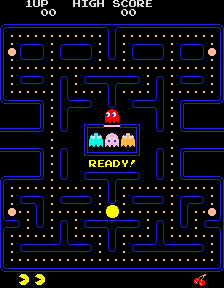

Jocurile video
Un joc video este un joc electronic în care se interacționează cu o interfață grafică pentru a genera răspuns vizual pe un ecran. Jocurile video în general au un sistem de recompensare a utilizatorului, de obicei se ține scorul, acest sistem depinzând de îndeplinirea unor anumite obiective în joc. În anul 2008, piața mondială de jocuri video a înregistrat o valoare de 41,9 miliarde de dolari iar în 2011 a ajuns la 56 miliarde dolari. Pentru anul 2015, piața este estimată să crească la 82 miliarde dolari.

Jocul Pac-Man conceput de firma Namco a fost un hit și a devenit un adevărat fenomen cultural. Jocul a lansat un desen animat și cântece pop, devenind unul dintre cele mai copiate jocuri din toate timpurile